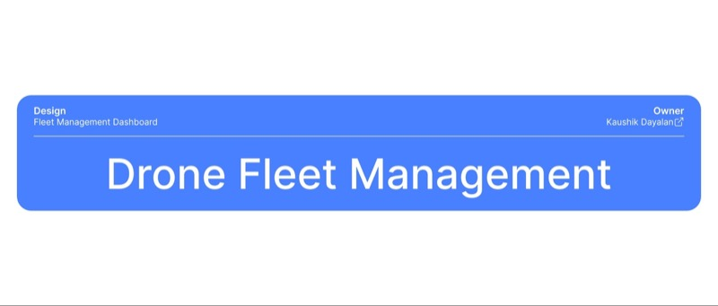

01
The problem space
A fleet manager opens the day needing status across the whole operation — not five tabs and a spreadsheet. Missed signals mean delayed deliveries and unsafe flights.
Strategy & Research · Personal project
A research case study — not a client ship. A reusable structure for dense operational dashboards, applied to drone fleet management.

Why this exists
Fleet managers need one view of orders, drones, weather, safety, and disruptions. Without a clear hierarchy, they hop tools, read spreadsheets, and miss the failure that matters now. This study defines what must be readable in five seconds — and what can wait.
A fleet manager opens the day needing status across the whole operation — not five tabs and a spreadsheet. Missed signals mean delayed deliveries and unsafe flights.
Nine design practices: user needs → end goal → dashboard type → five-second rule → KPIs → IA → context → minimalism → aesthetics.
Pickup → hub → last-mile delivery on drones. Same patterns apply to MSP ops, logistics, or any multi-signal control room.
Framework
Each practice becomes a chapter in the slide deck — jump to any of them below, or walk the full sequence.
Fleet manager jobs, alerts, and decision moments.
Clear overview, faster triage, fewer delays.
Operational / analytical slices for delivery ops.
Status and risk readable before any drill-down.
Orders, drones, issues — not vanity metrics.
Must-know vs nice-to-know layout zones.
Benchmarks, labels, annotations, related pages.
Density without decorative chrome.
Colour, type, and components that scale.
Full study · 55 boards
Use the chapter pills to jump, or arrow through every board. This is the complete original deck — title, brief, journey map, principles, low-fi, hi-fi annotated screens, colour system, and learnings.

Tip: use ← → keys to move through the deck.
What this proves
Drone delivery was the sandbox. The hierarchy — overview first, alerts second, detail on demand — is the same pattern I later applied on enterprise ops surfaces like MSC and security readiness.
Built with limited domain access — learnings and future proposals (predictive maintenance, dynamic routing) are documented in the closing boards.
Wireframes establish zones; annotated hi-fi screens show how “must know / important / nice to know” land in the live UI.
Swap drones for tenants, backups, or therapy sessions — the five-second rule and KPI discipline still hold.
Confidentiality note: This project is under NDA. Design is complete and moving into development.
Interface redrawn and figures synthesized for case study presentation.
The core architectural logic and UX constraints remain true to production.